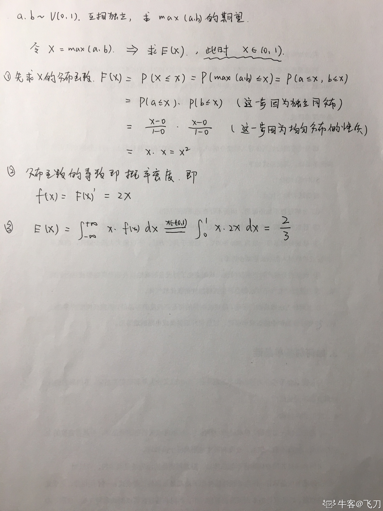

Machine Learning Engineer (Ads) Interview Questions
A Guide to Pass the MLE interview.
1 有一个天平，8个外观相同的小球，其中7个质量相同，1个较轻。最多称两次，找出较轻的那个小球。
答：第一次称的时候，天平两边各放3个球，剩余2个球。
如果天平平衡，说明较轻的球在剩余的两个球中，第二次称的时候只需称剩余的这2个球即可。
如果天平不平衡，从第一次称时相对较轻的那3个球中选2个做第二次称重。第二次称重时，如果天平平衡，则剩下的那个球就是较轻的；如果天平不平衡，较轻的球也就找到了。
2 排列组合，英雄联盟5v5,选择的英雄不能重复。一共有60个英雄。我方选择到孙悟空的概率是多少。
孙悟空+9个其他= \(C^9_{59}*C^4_{9}/C^{10}_{60}*C^5_{10}\)
3 经典分金条：你让工人为你工作7天，给工人的回报是一根金条。金条平分成相连的7段，你必须在每天结束时给他们一段金条，如果只许你两次把金条弄断，你如何给你的工人付费？
答：金条只能弄断两次，也就是三段。我的想法是分成1/7、2/7、4/7。
第一天给工人1/7段；
第二天给工人2/7段，同时把昨天的1/7段要回来；
第三天再把1/7段给工人，这样工人手中就是3/7段了；
。。。
4 毒老鼠：1000瓶毒药要至少多少只老鼠，假设每只老鼠吃了药之后，如果中毒会24小时内毒发而死，才能找出具体的哪一瓶？
答：位运算，每一只老鼠都可以当做一个二进位，代表0和1，0代表老鼠没事，1代表老鼠死了
根据2^10=1024，所以至少10个老鼠可以确定1000个瓶子具体哪个瓶子有毒。
为了更好的表达原理，将题目整体缩小为如何用3只老鼠确定8个瓶子(2^3 = 8)。
一位表示一个老鼠，0-7表示8个瓶子。例如5号瓶子，对应是101，那就是老鼠1和老鼠3都得吃，4号瓶子对应是100，也就是只让老鼠3吃。
映射关系：
000 = 0
001 = 1
010 = 2
011 = 3
100 = 4
101 = 5
110 = 6
111 = 7每一位就表示一个老鼠，右侧的0-7表示8个瓶子。
例如5号瓶子，对应是101，那就是老鼠1和老鼠3都得吃；4号瓶子对应是100，也就是只让老鼠3吃。
根据这个逻辑：分别将1、3、5、7号瓶子的药混起来给老鼠1吃，2、3、6、7号瓶子的药混起来给老鼠2吃，
4、5、6、7号瓶子的药混起来给老鼠3吃，哪一只老鼠死了，相应的位置就为1。
现在对某瓶未知序号的毒药，如果出现了情况是老鼠1死了、老鼠2没死、老鼠3死了，这就是101情况对应5号瓶子，那么就是101=5号瓶子有毒。
按照这个原理，10个老鼠也就可以确定1000个瓶子了。
5 参赛者会看见三扇关闭了的门，其中一扇的后面有一辆汽车，选中后面有车的那扇门可赢得该汽车，另外两扇门后面则各藏有一只山羊。当参赛者选定了一扇门，但未去开启它的时候，节目主持人开启剩下两扇门的其中一扇，露出其中一只山羊。主持人其后会问参赛者要不要换另一扇仍然关上的门。问题是：换另一扇门会否增加参赛者赢得汽车的机率？注意此处规定了主持人必开山羊的门，而不是随手开任意一道门。
答：如果你最开始选中羊的门，换门必赢，不换必输；如果选中车的门，不换门必赢，换门必输。所以换门赢的概率是2/3。
6 一个家庭中有两个小孩，已知其中有一个是女孩，则这时另一个小孩是男孩的概率是多少？（假定生男孩和生女孩的概率是一样的）
2/3（条件概率）
7 一个家庭中生了一个孩子是女孩，那么再生一个是男孩的概率是多少？
1/2（两个独立事件）
8 两个桶分别装了一样多的红色和蓝色的颜料。先从蓝色桶里舀一杯倒入红色中，搅拌不均匀。再从有蓝色的红色桶中舀一杯倒入蓝色桶里，问两个桶中蓝：红与红：蓝的大小关系
9 已知某种罕见病的检测准确率是98%，实际人群中患病概率为x，小张某天去医院检测该病为阳性，那么他实际患病概率是多少？
答：
(1) 分解问题
1. 要求解的问题：病人检验为阳性，得病概率有多大？
假设病人检验结果为阳性为事件B，他得病记为事件A，
那么要求的是 $P(A|B)$
2. 已知信息
发病率x，即P(A)=x
检验准确率98%，即患者确实得病的情况下（A），有98%的可能显示阳性，即P(B|A)=98%
误报率为1-98%=2%，即患者没有得病的情况下（A'），有2%的可能呈现阳性，即P(B|A')=2%
(2) 应用贝叶斯定理
{width=100%}
1. 求先验概率
P(A) = x
2. 求可能性函数
前面我们知道了P(B|A)=98%，现在求P(B)，根据全概率公式可得：
{width=100%}
P(B)=0.98x+0.02(1-x)=0.02+0.96x
3. 带入贝叶斯公式求后验概率10 已知平面上5个点，如何求离这5个点欧氏距离之和最近的点？
答：五点连线，得到交点，交点内部递归连线，直到阈值
11 52个球，黑白各一半，取到2个球，相同颜色的概率是多少
答：\(C^1_2 * C^1_{26} * C^1_{25} / C^2_{52}\)
12 两个人轮流抛硬币，抛到正面就获胜，先手胜利的概率
答：设甲先抛。设甲胜率为x。则第一次甲抛了反面后，乙胜率为x，从而甲胜率+乙胜率=x+0.5x=1，从而x=2/3。
13 一共n张牌，两人轮流抽排，每人每次需抽取1至m张（不可不抽），谁先抽完牌谁赢（无牌可抽的算输）。给定输入n,m。请问先手的玩家能赢吗？（注：两人都会做出对自己最优的策略）
答：用张数除以(m+1)，你先抽比余数少一张数。例如余3的话只抽走2张，然后不管对方抽几张，你就跟对方凑(m+1)，若干次后，就只剩一张刚好轮到对方。 例如：牌有22张，m=5, 22÷6=3…4 你就先抽3张，对方抽x张你就抽6-x张，如：对方2你4，对方5你1，跟对方凑6，3次后21张抽掉了，刚好轮到对方。
14 49个人中至少几个人生日是同一月？
答：5
15 一个聚会上，每两个人只握一次手，一共握了45次，问一共几个人？
答：n个人握手次数为 \(n-1, n-2, ..., 1\)，$ (n-1 + 1)*{n-1}/2=45, n=10$
16 54张扑克牌，分成三等份，求大小王在同一组的概率
答：大王肯定在某一份的18张牌里，那么要求小王在同一份的话，就是 \(17/53\)
17 抛硬币，正反概率都是0.5，如果是正面则继续抛，求抛硬币次数的期望

18 给一个数组A，数组里按顺序存的一组点，表示一个多边形，再给一个点B，问如何判断点在多边形内部
答：把多边形分解成有限个三角形，去判断点是不是在三角形内
19 一条线段任意分成三份，这三条线段能够组成三角形的概率是多少
答：设线段长为a,任意分成三段的长度分别是x 、y 和z=a-(x+y) ，其中x +y＜a，则可以列出式子
x+y＞z,即 \(x+y>(a-x-y),x +y>a/2\)
y+z＞x,即 \(y+(a-x-y)>x,x＜a/2\)
z+x＞y,即 \((a-x-y)+x>y,y＜a/2\)
所求概率等于x+y=a/2、x=a/2、y=a/2三条直线所包围图形的面积除以直线(x+y)=a与x轴、y轴所包围图形的面积
\(（a/2*a/2*1/2）÷（a*a*1/2）=a²/8÷a²/2=1/4\)
20 某开发团队有6位开发同学,需参加5个项目， 每个项目都有人做 ,每位同学需要恰好参加1个项目,那么总共有多少种不同的分配方案？
答：先选出四个人C64=C62=15做四个项目C54*A44=120，剩下的两个人做剩下的
15*120=1800，答案是1800种。
21 有36匹马，6个跑道，无计时器，最少多少次能够选出最快的三匹马？
答：36匹马分6个组,分别为A、B、C、D、E、F组.
1. 每个组各跑一次,取每组前三名,用a1，a2，a3，b1，b2，b3，c1，c2，c3以此类推表示
2. 每个组的第一名（a1到f1）拉出来跑一次（确定前三名）
后三名及其所在组的其余组员均被淘汰（第一都被淘汰了后边的也肯定被淘汰），两战都是第一的已经提前夺冠.
3. 剩余两个名额和在已经夺冠的小组的第二第三和第二名小组的第一第二和第三名小组的第一里得出。总次数=6+1+1=8
22 假设A和 B 服从(0,1)的均匀分布，并且A和B相互独立，求max(A, B)的数学期望。
答：
23 编程或者直接计算单位圆内的随机点到原点距离的期望值。我直接积分解决的。也可以就蒙特卡洛实验搞定
24 假设我们要统计全国人民的年均收入，首先假设这个收入服从服从正态分布，但是该分布的均值与方差未知。我们没有人力与物力去统计全国每个人的收入。我们国家有10几亿人口呢？那么岂不是没有办法了？
答：这个时候既可以采用极大似然估计法，极大似然就是估计出整个模型的参数。我们比如选取一个城市，或者一个乡镇的人口收入，作为我们的观察样本结果。然后通过最大似然估计来获取上述假设中的正态分布的参数。
有了参数的结果后，我们就可以知道该正态分布的期望和方差了。也就是我们通过了一个小样本的采样，反过来知道了全国人民年收入的一系列重要的数学指标量！那么我们就知道了极大似然估计的核心关键就是对于一些情况，样本太多，无法得出分布的参数值，可以采样小样本后，利用极大似然估计获取假设中分布的参数值。
总结 利用已知的实验结果，反推最大概率导致这个实验结果的模型参数。通过极大似然估计，估计出模型的重要参数，如均值、方差等等，以备后用。
25 概率p输出1，概率1-p输出0，等概率输出0和1 & 【LeetCode】470. rand7()构造rand10() 系列变形（新浪、字节面试题）
25.1 有一个随机数发生器，以概率 P 产生0，概率 (1-P) 产生 1，请问能否利用这个随机数发生器，构造出新的发生器，以 1/2 的概率产生 0 和 1 。请写明结论及推理过程。（ 注意：这里的 p 相当于是未知的，后文会提到已知 p 的类型，解题思路是不同的 ）
答：两次调用该 RANDOM 函数，如果其概率为 P(x)，调用2次：
$P(1,1) = p*p$
$P(1,0) = p*(1-p)$
$P(0,1) = (1-p)*p$
$P(1,1) = (1-p)*(1-p)$
很明显，这四种情况中出现 (0,1) 和 (1,0) 的概率相等，那么把 (0,1) 看成是 0 , (1,0) 看成是 1 ，那么他们输出的概率均为 p (1 - p)，其他的情况舍弃并重新调用。这样就得到了 0 和 1 均等生成的随机器了。
这种解法可以推广到n个数的情况，我们知道，取n个随机数发生器，存在n个概率相同的独立事件，我们只使用这n个事件就得到1/n的概率了。例如 n=3 ,有 8 中情况000,001,010,011,100,101,110,111，其中001,010,100的概率都是 $p^2 * (1-p)$